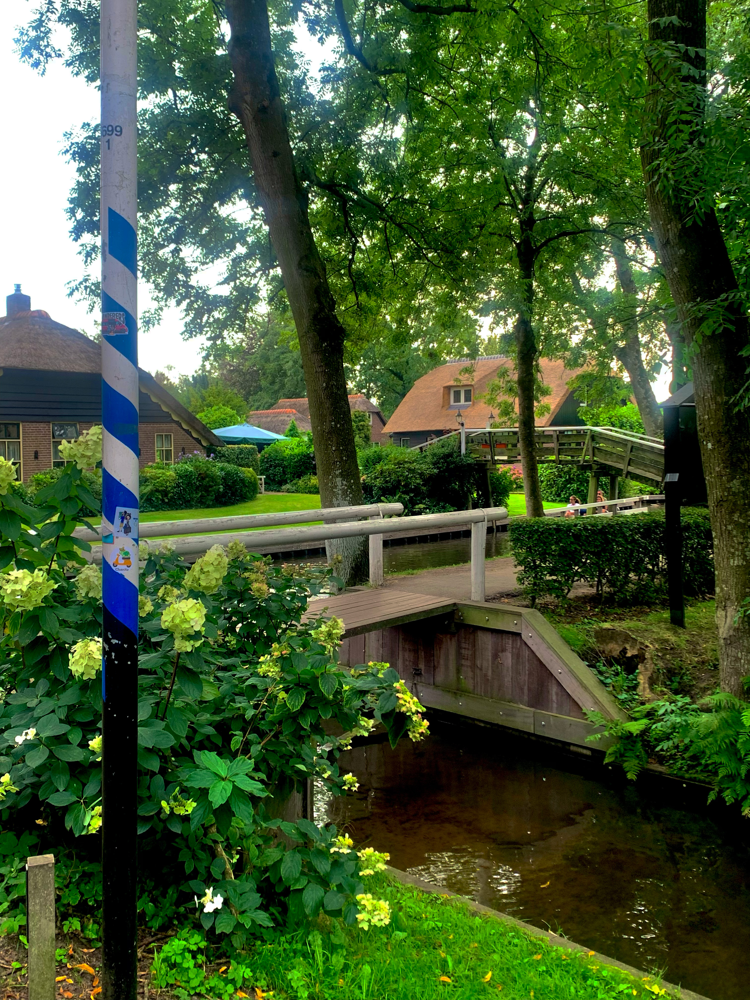
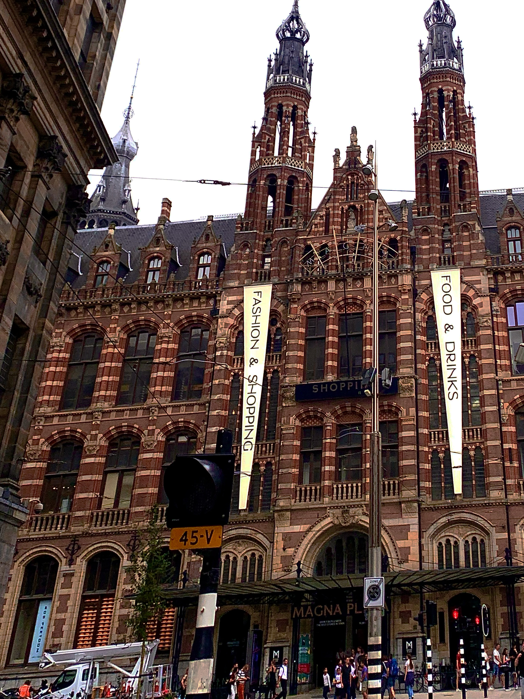

Muiderslot

Giethoorn
Magna Plaza
Muiderslot is located in Muiden, a city in the Netherlands. The castle itself holds a lot of fascinating history and artwork. Some of its most unique features include original furnishings, a garden maintained with traditional herbs and plants, and its battle history. For someone who wants to feel as though they've been transported back in time, this castle will provide the desired effect. Some of my most treasured photos originated from Muiderslot.